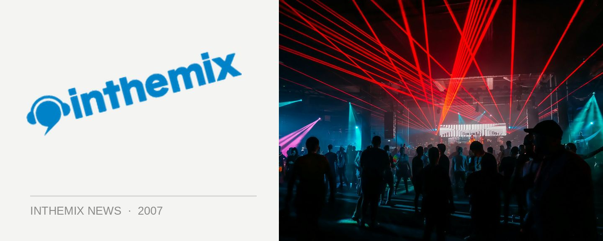

John ‘00’ Fleming set times for tonight
One of the dance scene’s most enduring names, and one of trance’s main players John ‘00’ Fleming will be hitting Sublime tonight for a massive three-hour set. Check below for the set times!
John’s DJ career started at the rip old age of 15, and forging an inimitable reputation across the globe, his hard work and talent paid off in spades. He’s sold more than a million copies of his mix compilations to date, run his own record labels, hosted radio shows and embarked on countless world tours that have seen him return to Australia many times over.
Adept across all shades of trance and the tougher side of progressive, the past few years has seen him veer heavily in the direction of psytrance as part of his mission to freshen things up. He’s been in the country for the famed Earthcore party in Melbourne but tonight he’ll be bringing it to the Sublime crowd.
John ‘00’ Flemming hits Sublime tonight! Tickets on sale from ITM, check out the set times below…
Voodoo In The Main Room
11:00 – 01:00 – Jumping Jack
01:00 – 04:00 – John “00” Fleming
04:00 – Close – Archie
Go-Beat! In The Box
01:00 – 02:30 – Jay Funk (Ibiza)
02:30 – 04:00 – Klaus “Heavyweight” Hill
Young Guns In The Icon Room
01:00 – 01:45 – Cliché Central (Live)
01:45 – 02:30 – Slim
02:30 – 03:15 – Arbee
03:15 – 04:00 – SDee
Sububanite On The Terrace
12:00 – 01:30 – SeFu (96.1)
01:30 – 03:30 – Nick Toth
03:30 – 05:00 – Sleazy D & MC Sesh